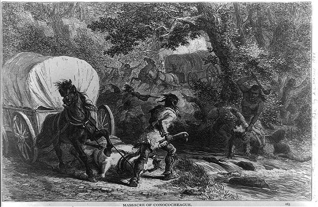
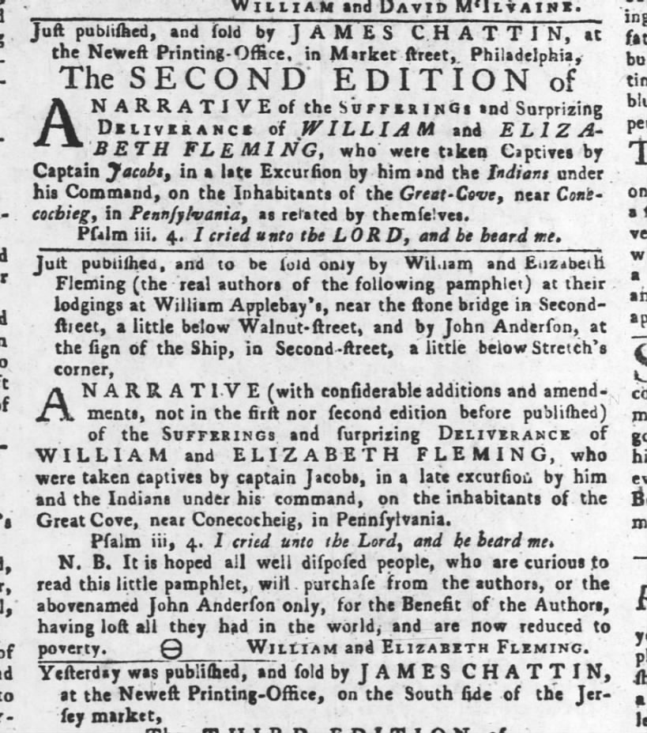
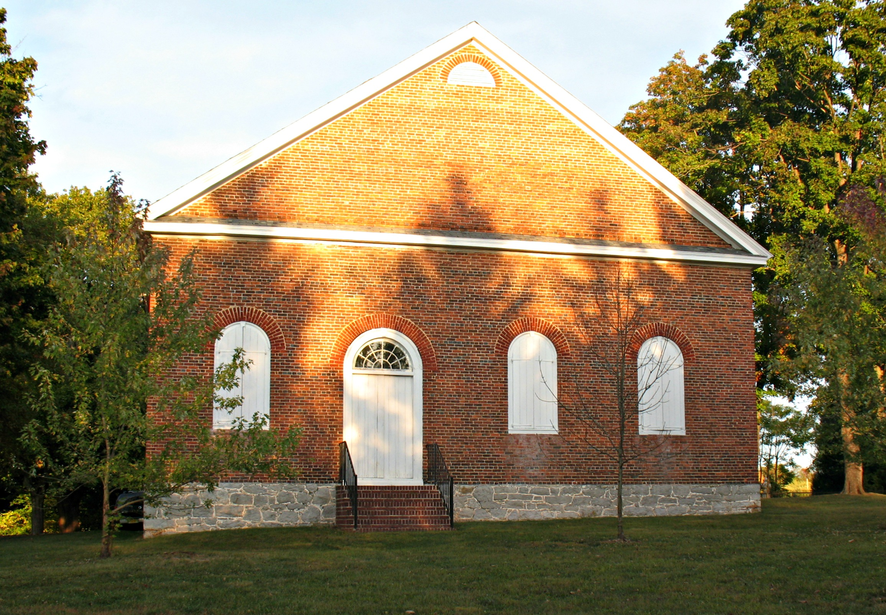

From Ulster to Rocky Spring: The Story of John Wead
Start here
Newest research paths
Use these shortcuts when you want the current map work or the most evidence-sensitive pages without scrolling through the full John Wead narrative first.
Scots-Irish Roots in Ulster
John Wead was born around 1710 in County Cavan, in the Ulster region of Ireland. He came of age amid the difficult conditions facing Scots-Irish Presbyterian families in Ireland – economic hardships, landlord pressures, and limits on religious freedom. Like many of his countrymen, young John sought opportunity in the New World. During the great wave of Ulster emigration in the late 1720s, he likely sailed for Pennsylvania (at about eighteen or twenty years old, circa 1728–1730). Pennsylvania was a popular destination for Ulster Protestants, offering cheap land and the promise of tolerance for dissenting Protestants. John may have spent a brief time in the more settled parts of the colony – perhaps among fellow Scots-Irish in Lancaster County’s Donegal or Paxtang settlements – before pressing onward to the frontier. Colonial officials actively encouraged Presbyterian Ulster immigrants to move to the frontier as a buffer against French and Native incursions. John Wead was exactly this kind of hardy settler: he followed the lure of affordable land to the very edge of British territory, likely aided by networks of kin or neighbors who had migrated before him. In leaving Ireland, however, John did not sever all ties – as would later become clear, he left family behind in Ulster even as he planted new roots in America.
When the French & Indian War (1754–63) spilled into the Cumberland Valley, the Wead homestead sat on the very line of danger. In November 1755, Shawnee and Lenape warriors struck the settlements west of Rocky Spring in the Great Cove massacre—burning cabins only a day’s ride from John Wead’s farm and carrying off dozens of neighbors as prisoners. Raids continued down the Conococheague frontier through 1756, forcing many families to abandon their claims and crowd into makeshift stockades; Rocky Spring itself was fortified with a log “fort meeting-house” during the crisis.

The threat was so acute that in February 1760—with militia patrols thin and rumors of a renewed assault—John drafted his first will. It conveyed his “plantation near Rocky Spring” to his twelve‑year‑old son Ebenezer and provided cash legacies and livestock for daughters Fanny, Elizabeth, and Mary. In a single document we glimpse a father’s resolve to secure his children’s future, even as war, disease, and displacement stalked the Falling Spring settlement.
The will does more than show anxiety about the frontier—it preserves John’s own testimony of service. In the body of the 1760 document, he directed that “what money is due me for my service in the Provincial Troops, in years 1758 and 1759” should be applied toward paying for the deed to the land. That line is crucial. It means John Wead was not merely living through the French and Indian War; by his own statement, he had served in the provincial forces during those campaigns and expected back pay for it.
1760 will / DAR abstract: “what money is due me for my service in the Provincial Troops, in years 1758 and 1759. When money is received, to pay for a deed for the above land.”

Homestead Legacy: From Warrant to Community
John's decision to prepare his estate bore fruit. In 1765, his son Ebenezer received a formal land warrant from the Proprietary government, confirming improvements made decades earlier by "John Waid, father of said Ebenezer." This wasn’t just a legal formality—it recognized the family's right to nearly 480 acres shaped by John’s early labor. The Wead homestead encompassed fields, woodlots, and springs in an area that became a hub of Scots-Irish settlement. It stood near the Rocky Spring Presbyterian meetinghouse and bordered farms owned by the Culbertsons, Andersons, and Boyds—families tied together by marriage, kinship, and shared faith. John’s choice of land and his long residence there reflected not only persistence but quiet leadership. His presence helped transform a contested edge of empire into a rooted community.
The surviving archive does suggest stretches where John is harder to trace in local records than one might like, but that is a separate issue from his military service. The service itself does not have to be inferred from a gap: it is explicitly named in the 1760 will and repeated in the later printed abstract of Franklin County records.

Later Years, Faith, and Family
John Wead remained on the land for the rest of his life. In tax rolls from the 1780s, he appears as a stable landholder with domestic help, suggesting ongoing productivity and community standing. His faith never wavered. When Rocky Spring Presbyterian Church formally organized in the 1780s, John was already a regular at the log meeting house. An inventory after his death revealed a personal library of theological works—Westminster Confession, volumes of sermons, and Robert Wodrow’s History of the Sufferings of the Church of Scotland—showing both his literacy and deep Presbyterian conviction. In 1789, just months before his death, he drafted a new will. This final testament provided for his wife Janet (née Gabby), left gifts to his grandson John McConnell and nephew William Gabby, and notably remembered his brother William Wead of Bailieborough, County Cavan—a rare and precious transatlantic genealogical link.
A Well-Provisioned Man of Principle
When John Wead died in 1790, he left behind more than 200 acres of improved land, a herd of livestock, and a home well-stocked with tools, furniture, and religious books. His personal inventory included nearly two dozen cows and heifers, over 100 sheep, and a wagon, suggesting he ran a productive, self-sufficient farm. Yet nothing in his estate was extravagant—every item, from a dung fork to a family Bible, reflected utility and conviction.
His library was steeped in theology and Scottish history. Titles like The Confession of Faith and Wodrow’s History of the Church of Scotland reveal a man who lived—and taught—his Presbyterian values. He was literate, devout, and trusted by his community. His wife Janet, three decades his junior, was not only his final spouse but one of two executors of his estate. The other? His neighbor and friend James McConnell.
This was no solitary farmer. This was a man respected by neighbors, remembered in Ireland, and loved by family.
From Pennsylvania to the Western Frontier: A Lasting Legacy
John Wead died on January 17, 1790, at the age of 79, and was buried in the Rocky Spring cemetery he helped settle more than 50 years earlier. But his story didn’t end there. In the following decade, his descendants joined the wave of westward migration. Ebenezer Wead and his family moved to Kentucky in the 1790s and later crossed into the Ohio frontier, establishing roots near Dayton. There, the Weads built new homes, founded churches, and petitioned authorities for security as the young republic expanded. Ebenezer lived until 1830, bridging the colonial frontier and early Ohio statehood. Through each chapter, John’s descendants carried his values—faith, hard work, land stewardship, and readiness to defend home.
A musket once held on a rocky Pennsylvania hillside may have ridden in a wagon across the Alleghenies, a silent heirloom of courage and conviction. Today, John Wead’s legacy endures as a powerful emblem of the Scots-Irish American experience—a tale of grit, grace, and generational endurance.
Continue the story with Ebenezer Wead (1748–1830) — Frontier Settler and Ohio Pioneer.